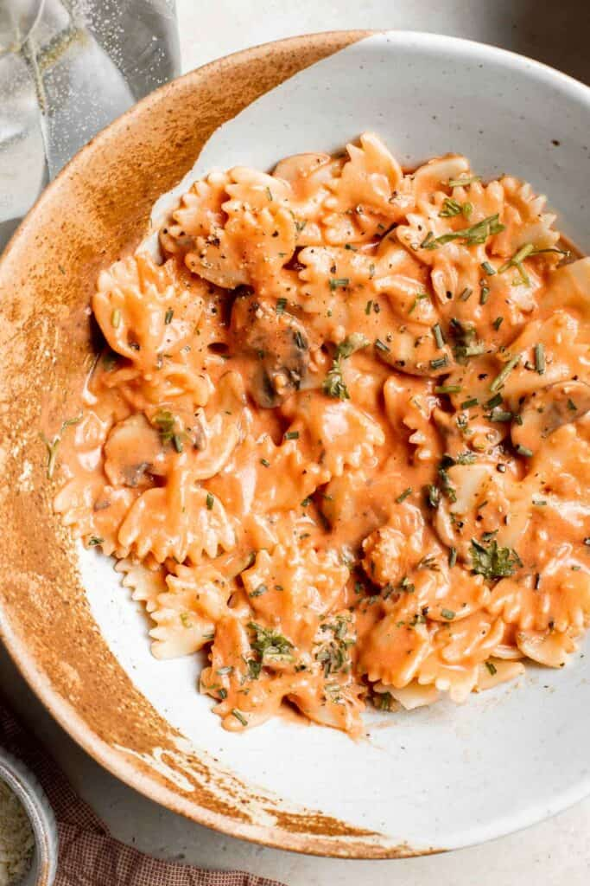
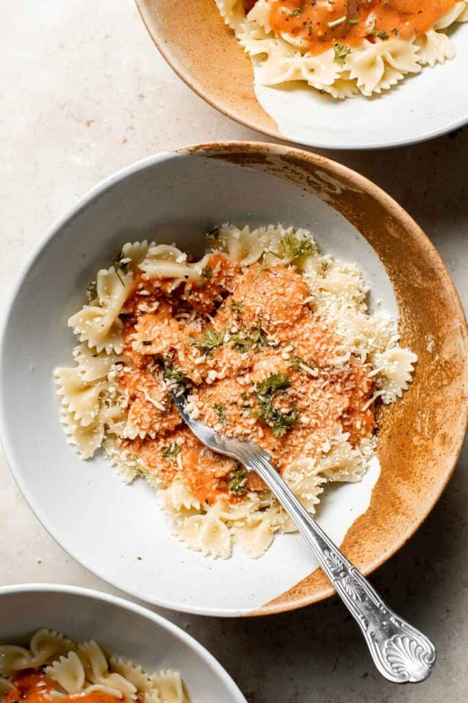

Creamy Mushroom Pasta
Creamy mushroom pasta is packed with buttery garlicky mushrooms swimming in a delicious creamy Parmesan sauce. This quick and easy recipe is perfect for busy weeknights, but fancy enough for dinner on date night or any special occasion. Seriously, it takes just 20 minutes to make this vegetarian pasta (including prep!).
Ingredients
To make this delicious creamy mushroom pasta, you will need the following ingredients:
-
pasta - you can use any shape of pasta that you would like. I prefer a long noodle such as spaghetti, fettuccine, or linguine, for soaking up all that sauce
-
olive oil
-
brown mushrooms - I prefer brown mushrooms (also known as cremini mushrooms) but you can use other types of small mushrooms as well such as white mushrooms or shiitake mushrooms.
- all-purpose flour - helps to thicken up the sauce.
- garlic
-
heavy cream - for the creamiest results, use heavy cream. But if you are looking for a healthier version, feel free to substitute with half and half cream.
- Parmesan cheese
- fresh parsley
HOW TO MAKE THE BEST CREAMY MUSHROOM PASTA
Making this pasta is welly easy. Just follow the steps below.
-
Make the pasta. Bring a large pot of salted water to a boil over medium-high heat. Add pasta and cook until al dente (fully cooked but still firm), or according to package directions, about 10 minutes. Drain well and set aside in the pot. Drizzle a little olive oil and toss together to keep the pasta from sticking together.
-
Sauté mushrooms. In a large skillet or shallow saucepan, heat olive oil over medium-high heat for 2 minutes until the hot oil sizzles. Add mushrooms and season with salt and pepper. Sauté for 5-7 minutes until nicely browned on all sides.
-
Make sauce. Add butter, garlic and flour. Stir well for 1 minute until fragrant and well-combined. Add heavy cream, Parmesan cheese, and parsley. Stir well and bring the sauce to a simmer. Reduce heat to medium and keep stirring until thickened to a desired consistency.
-
Toss with pasta. Add cooked spaghetti into creamy mushroom sauce and toss well to combine. Sprinkle with extra Parmesan and fresh parsley on top, and serve immediately.


Tips
-
How to store: Allow any leftover creamy mushroom pasta to cool to room temperature before placing it in the refrigerator. Store in an airtight container and refrigerate for 3-4 days. Freezing pasta is not recommended
-
How to reheat: For best results, reheat creamy mushroom pasta on the stovetop in a covered pan on low heat. Add a dash of water or chicken broth to thin out the sauce, which will naturally thicken as it heats. If the sauce becomes too thin, heat uncovered until it thickens.
-
Make it vegan: To make this creamy mushroom pasta recipe vegan, you only need to omit the dairy. Substitute dairy-free butter or use oil instead of butter, omit the Parmesan cheese and substitute full-fat coconut milk for heavy cream.
Home Page